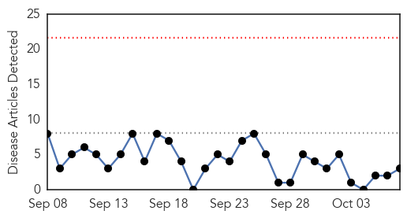
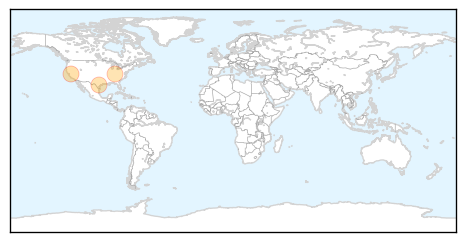
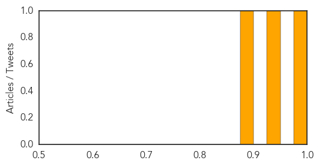
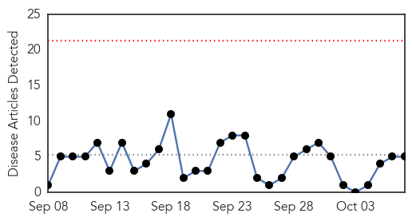
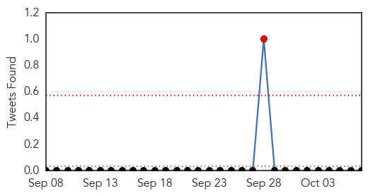
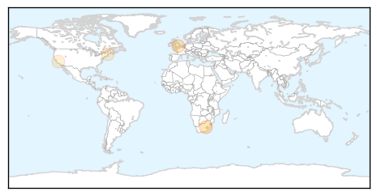
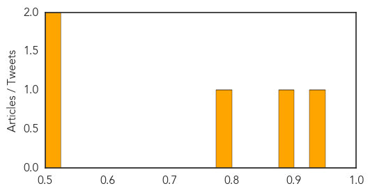

West Nile Virus
30-Day Web Trend
0 alerts, 0 warnings

30-Day Twitter Trend
0 alerts, 0 warnings

Article Locations
Article Confidences
Top Articles:
Top Tweets:
-
No tweets found for Oct 07, 2015
Meningitis
30-Day Web Trend
0 alerts, 0 warnings

30-Day Twitter Trend
1 alerts, 0 warnings

Article Locations
Article Confidences
Top Articles:
- 0.926
- Viral meningitis confirmed at two more Genesee County schools
- 0.886
- Ministry launches new vaccine
- 0.787
- Can flying make you sick?
- 0.519
- State testing for strain of E. coli that sickened 2 toddlers in Maine
- 0.511
- Meningococcal Vaccines Market compounded annual growth rate (CAGR) 14.9% between 2013 and 2019
Top Tweets:
-
No tweets found for Oct 07, 2015